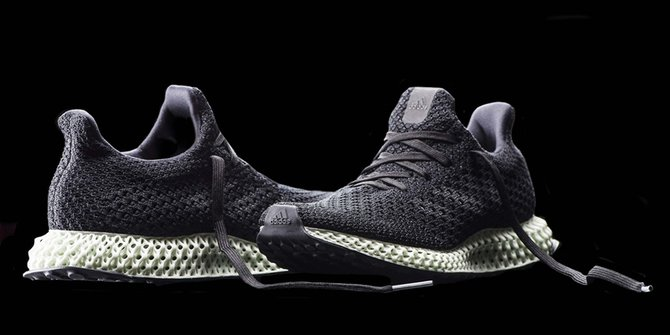

7 Teknologi Canggih yang Pasti Jadi Standar di Tahun 2030
Reporter : Indra Cahya
1. Indoor Drone dan Camera Vision
Merdeka.com - Saat ini, drone adalah gadget yang masih kita gunakan untuk mengambil gambar dan keperluan videografi. Namun dalam sepuluh tahun ke depan, drone akan jadi lebih mungil ukurannya, lebih mudah dioperasikan, serta digunakan indoor.
Tujuannya bukan lagi untuk videografi semata, namun untuk memeriksa inventaris barang di gudang secara lebih cepat dan lebih efektif. Beberapa ritel di AS sudah menerapkan teknologi ini, seperti Walmart dan Kohl's.
Selain itu penggunaan kamera berbasis teknologi vision juga akan jadi standar di berbagai toko-toko yang memiliki gudang, agar lebih mudah melacak barang-barang secara langsung dan efektif.
2. Layar Interaktif

Layar interaktif kini sudah sering kita temui di berbagai tempat, seperti minimarket serta kantor pemerintahan. Namun dalam sepuluh tahun ke depan, semua tempat akan menggunakan layar interaktif semacam ini untuk memudahkan konsumen.
Deretan tempat yang akan menggunakan teknologi ini adalah ritel pakaian serta restoran. Hal ini akan meminimalisir waktu antri dan memudahkan konsumen untuk memilih apa yang diinginkan dengan lebih cepat.
Teknologi ini pun akan lebih dipilih oleh perusahaan karena akan memangkas jumlah pegawai jadi lebih efisien, sembari konsumen bisa menikmati produk dengan lebih efektif.
3. Layanan Berbasis Smartphone
2019 adalah tahun berkembangnya 5G, dan sudah barang tentu kalau dalam 10 tahun dari sekarang, teknologi 5G akan jadi standar dalam kehidupan kita. Hal ini akan berdampak pada banyak hal. Segala sesuatunya akan selalu berbasis smartphone karena internet cepat yang terhubung di dalamnya.
Aspek yang akan paling terasa adalah soal pembayaran mobile. Ketika sekarang saja pembayaran cashless sudah umum, di 10 tahun mendatang, bermodal aplikasi dompet digital di smartphone kita, transaksi keuangan tak akan mengenal 'kertas' lagi.
4. Mesin 3D Printing di Tiap Toko
Saat ini, printer 3D masih belum terlalu lazim dimiliki banyak orang. Namun dalam 10 tahun ke depan, hal ini akan berubah. Hampir semua toko akan memiliki printer canggih ini, sehingga konsumen akan lebih mudah mendapatkan produk apa yang sesuai dengan keinginan mereka.
Seperti contohnya adalah ritel sepatu yang akan mengkustomisasi sepatu sesuai detil keinginan Anda, solnya begini, bentuk sepatunya begitu, warnanya begini, kualitasnya begitu.
Hal ini sudah diterapkan oleh Adidas dan Nike di beberapa toko premiumnya.
5. Kasir Otomatis
Kasir otomatis sudah didemonstrasikan oleh Amazon Go. Teknologi ini berbasis tiga hal, camera vision, sensor rak, serta teknologi RFID yang menggunakan identifikasi elektromagnetik untuk melacak tag di produk yang dibeli, sehingga tagihan bisa langsung masuk ke rekening Anda.
Tentu saat ini berbagai teknologi ini masih sangat terbatas untuk diterapkan di cakupan yang lebih luas. Namun tak perlu tunggu 10 tahun, dalam beberapa tahun lagi saja konsep ini akan segera jadi standar di banyak tempat.
Kemudahan tanpa antri bagi konsumen dan pelacakan barang yang kosong bagi ritel akan membuat proses belanja akan makin efisien.
6. Drone Pengantar Barang
Drone pengirim barang sudah mulai diuji coba oleh Amazon, dan jika berhasil, maka dalam beberapa tahun ke depan semua e-commerce akan menerapkan hal serupa.
Drone pengantar barang ini sangat diupayakan pengembangannya, mengingat waktu pengiriman yang jadi lebih singkat dan juga efisiensi biaya yang jauh lebih murah ketimbang barang yang diantar manusia.
7. Mobil Listrik

Jika Anda saat ini masih memiliki impian untuk membeli kendaraan berbasis bahan bakar minyak, nampaknya Anda harus memupuskannya. Pasalnya hampir semua erusahaan produsen mobil sudah mencanangkan bahwa hingga 2023 mendatang, akan jadi transisi untuk mengakhiri era mobil bensin.
Diharapkan di atas tahun 2023, jalanan dipenuhi mobil baru yang berbasis listrik. Di dekade mendatang, diharapkan mobil bensin sudah tidak ada.
Di Indonesia, deretan regulasi menguntungkan sudah diberikan untuk pengguna mobil listik, dan diharapkan harga mobil listrik pun jadi makin terjangkau untuk penggunaan yang lebih meluas.